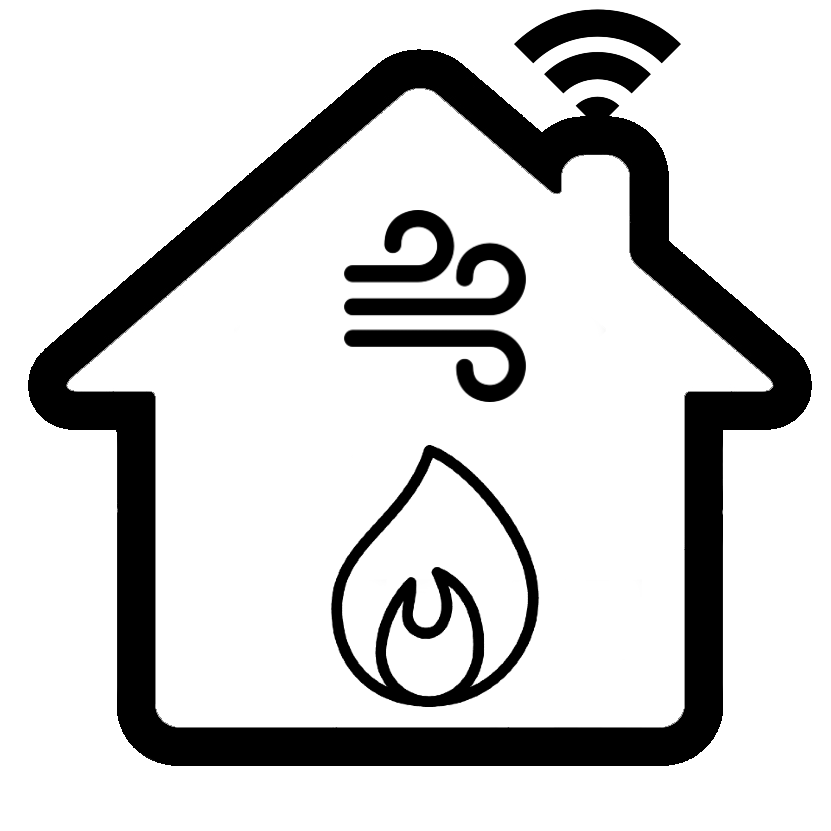

<!-- Mainbar component -->
<div class="mainbar">
    <mat-toolbar color="primary">
        <div class="logo mx-2">
            
        </div>
        <span>SmartHome Clima</span>
        <span class="toolbar-spacer"></span>
        <a [routerLink]="['/control-panel']" title="Go to smart room" class="mainbar-button">
            <button mat-icon-button aria-label="Navigate to Home">
                <mat-icon>home</mat-icon>
            </button>
        </a>
        <button mat-icon-button class="refresh-icon" aria-label="Refresh Data" (click)="refreshdata()">
            <mat-icon>refresh</mat-icon>
        </button>
        <ng-container *ngIf="!isStarting; else started" >
            <button mat-icon-button class="play_arrow-icon" aria-label="Play" (click)="startSmartHomeMonitoring()">
                <mat-icon>play_arrow</mat-icon>
            </button>
        </ng-container>
        <ng-template #started>
            <button mat-icon-button class="stop-icon" aria-label="Stop" (click)="stopSmartHomeMonitoring()">
                <mat-icon>stop</mat-icon>
            </button>
        </ng-template>
    </mat-toolbar>
</div>
